CRVI000140Jutaro Itoh - 企業空間のサイン — Corporate Signs (Designing Signs Vol. 2)
Jutaro Itoh and Atsuko Taguchi · Rikuyo-sha
Jutaro Itoh and Atsuko Taguchi · Rikuyo-sha

CRVI000316Moritz Von Oswald Trio - Horizontal Structures
Designer unknown · Honest Jon's · 2011
Designer unknown · Honest Jon's · 2011

CRVI000547Oliver Munday - Who Killed America's Newspapers?
The Atlantic, November 2021 · 2021
The Atlantic, November 2021 · 2021

CRVI002105Martin Kippenberger - Untitled (Aussen Alster Hotel)
1985
1985

CRVI000144Bud Shank Quartet - Jazz at Cal-Tech
Designed by William Claxton · Pacific Jazz 1219 · 1956
Designed by William Claxton · Pacific Jazz 1219 · 1956

CRVI001392Paul Natkin - Lil' Ed & The Blues Imperials
Photograph by Paul Natkin
Photograph by Paul Natkin

CRVI000528Gail Bichler - Should You Be in Therapy?
The New York Times Magazine, May 21, 2023 · 2023
The New York Times Magazine, May 21, 2023 · 2023

CRVI000464Richard Turley - The Hedge Fund Myth
Bloomberg Businessweek, 15 July 2013 · 2013
Bloomberg Businessweek, 15 July 2013 · 2013

CRVI000668Sam Kaplan, Brian Byrne - How to Stop a Civil War
The Atlantic, December 2019 · 2019
The Atlantic, December 2019 · 2019

CRVI000285Unknown - Heinz Tomato Juice — We're Sorry There Aren't Enough of our kind to go 'round
Advertisement · Fortune magazine · 1935 · 1935
Advertisement · Fortune magazine · 1935 · 1935

CRVI002130Judy Chicago - Pasadena Lifesavers Red #5
1970
1970

CRVI000177Hank Mobley - Tenor Conclave
Designed by Bob Weinstock · Prestige LP 7074 · 1956
Designed by Bob Weinstock · Prestige LP 7074 · 1956

CRVI000241Phil Baines - Why I Am So Wise
Cover for Friedrich Nietzsche · Penguin Great Ideas · 2004
Cover for Friedrich Nietzsche · Penguin Great Ideas · 2004

CRVI001309Lee Morgan - The Rumproller
Designed by Reid Miles, photograph by Francis Wolff · Blue Note 4199 · 1965
Designed by Reid Miles, photograph by Francis Wolff · Blue Note 4199 · 1965

CRVI002024Unidentified - Pink poured painting

CRVI000734Robert Beatty - Untitled
Album cover · artist and title unrecorded · Trendland plate 03
Album cover · artist and title unrecorded · Trendland plate 03

CRVI001856Unidentified - Caricature of a man with a bottle

CRVI000303Suicide - Suicide
Designer unknown · Red Star · 1977
Designer unknown · Red Star · 1977

CRVI000777Chermayeff & Geismar Associates - Print, September/October 1962
Print XVI:V · 1962
Print XVI:V · 1962

CRVI002211Piet Mondrian - Composition II
1922
1922

CRVI000327The Marvelettes - Please Mr. Postman
Designer unknown · Tamla · 1961
Designer unknown · Tamla · 1961

CRVI000039Música Esporádica - Música Esporádica
Designed by Música Esporádica · Grabaciones Accidentales · 1985
Designed by Música Esporádica · Grabaciones Accidentales · 1985

CRVI001821Bridget Riley - Chevron composition

CRVI000170Kestrel - Kestrel
Designer unknown
Designer unknown

CRVI000735Robert Beatty - Untitled
Album cover · artist and title unrecorded · Trendland plate 04
Album cover · artist and title unrecorded · Trendland plate 04

CRVI000227Beats International - Let Them Eat Bingo
Designer unknown · Go! Beat · 1990
Designer unknown · Go! Beat · 1990

CRVI000800Joseph Beuys - [Beuys with a rose in a graduated cylinder]
Signed photograph
Signed photograph

CRVI001520Robert Motherwell - From the Lyric Suite
1965
1965

CRVI000660Unknown - How to Make It in the Art World
New York, April 30, 2012 · 2012
New York, April 30, 2012 · 2012

CRVI002256Andy Warhol - Campbell's Soup Can (Beef Noodle)
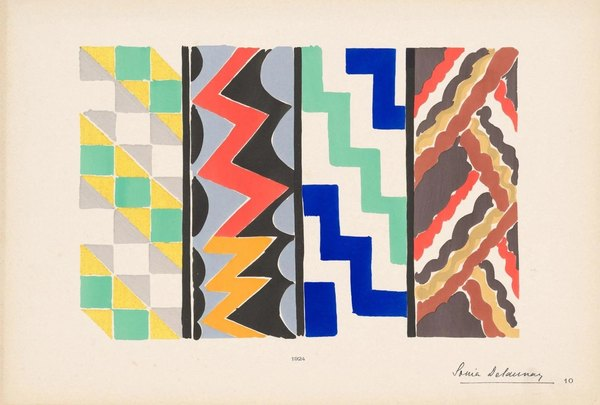
CRVI002343Sonia Delaunay - Plate from 'Ses peintures, ses objets, ses tissus simultanés, ses modes'
1925
1925

CRVI000469Unknown - The U.S. Created PRISM. It Also Created the Antidote
Bloomberg Businessweek
Bloomberg Businessweek

CRVI001342unattributed - American Jazz Annual, Newport edition
Maker unidentified · 1956
Maker unidentified · 1956

CRVI000479Martin Schoeller - The Health Issue
New York, July 15-28, 2024 · 2024
New York, July 15-28, 2024 · 2024

CRVI001789Michio Yoshihara - Untitled

CRVI000601Unknown - Replacing the Irreplaceable
New York, October 22, 1979 · 1979
New York, October 22, 1979 · 1979

CRVI002164Gego - Sin título
1966
1966

CRVI000253Lex Drewinski - Investigation Proved
Film Poster Designed By Lex Drewinski · 1983 · 1983
Film Poster Designed By Lex Drewinski · 1983 · 1983

CRVI001746Piet Mondrian - Composition with Red, Yellow, and Blue
1927
1927

CRVI001314Martin Denny - Latin Village
Designed by Studio Five · Liberty LRP-3378 · 1964
Designed by Studio Five · Liberty LRP-3378 · 1964

CRVI000640Alexander Grossman, Alex Lau, Elizabeth Cecil, Wilfred Hisashi - Eat Like a Local
Bon Appétit, May 2016 · 2016
Bon Appétit, May 2016 · 2016

CRVI000554Thomas Alberty - She Has Her Mother's Eyes. And Agent.
New York, December 19, 2022 · 2022
New York, December 19, 2022 · 2022

CRVI000102Actress - Splazsh
Designed by Will Bankhead · Honest Jon's Records · 2010
Designed by Will Bankhead · Honest Jon's Records · 2010

CRVI000655Unknown - The Photo Issue
VICE, July 2014 Brainiest · 2014
VICE, July 2014 Brainiest · 2014

CRVI001168Musical Youth - Pass The Dutchie
Designer unrecorded · MCA Records YOU 1 · 1982
Designer unrecorded · MCA Records YOU 1 · 1982

CRVI001513El Lissitzky - Untitled
1920
1920

CRVI000415Candyman - Ain't No Shame In My Game
Designer unknown · Épie · 1990
Designer unknown · Épie · 1990

CRVI000876John Provencher - Tracing Nature’s DNA
Bloomberg Businessweek, October 2023 · pages 48–49 · 2023
Bloomberg Businessweek, October 2023 · pages 48–49 · 2023

CRVI000558Ricardo Rey - The Fed That Failed
The Economist, April 23-29, 2022 · 2022
The Economist, April 23-29, 2022 · 2022

CRVI002135Hannah Wilke - Untitled

CRVI002072Jordan Wolfson - Untitled

CRVI000423Har-You Percussion Group - The Har-You Percussion Group
Designer unknown · ESP Disk · 1969
Designer unknown · ESP Disk · 1969

CRVI001874Agnes Martin - Untitled
1963
1963

CRVI001058Rick Valicenti - Show Boat — Lyric Opera of Chicago
Poster
Poster

CRVI001866Donald Judd - Untitled
1969
1969

CRVI000151Charles Mingus - The Clown
Designed by Marvin Israel · Atlantic 1260 · 1957
Designed by Marvin Israel · Atlantic 1260 · 1957

CRVI000396James White & The Blacks - Off White
Designer unknown · 1979
Designer unknown · 1979

CRVI001702Benedetta Cappa - Ironia
1930
1930

CRVI002277Frank Stella - Feneralia, from Imaginary Places

CRVI000818Seymour Chwast - The South, PPG #54
Push Pin Graphic #54 · 21.6 × 21.6 cm · 1969
Push Pin Graphic #54 · 21.6 × 21.6 cm · 1969

CRVI002340Paul McCarthy - White Snow, wood sculpture

CRVI000605Unknown - What Would Freud Think?
New York, March 31, 1986 · 1986
New York, March 31, 1986 · 1986

CRVI002237unattributed - Weaving design on graph paper

CRVI001748Georges Vantongerloo - Fonction de lignes

CRVI000141Shin Matsunaga - Shiseido Sun Oil
Offset lithograph · 1971
Offset lithograph · 1971

CRVI000783Paul Rand - No Way Out
Twentieth Century-Fox · 1950
Twentieth Century-Fox · 1950

CRVI000652Unknown - Coke Finally Admits It Has a Fat Problem--And a Plan to Fix It
Bloomberg Businessweek, August 4-10, 2014 · 2014
Bloomberg Businessweek, August 4-10, 2014 · 2014

CRVI001523Joan Mitchell - Untitled
1950
1950

CRVI002374Unidentified - Haloed figure at a table in a pink interior

CRVI000142Shin Matsunaga - [Poster: PLAY, black discs and an orange form]
Title not established
Title not established

CRVI000068Randomize - ¿Cómo se divertirán los insectos?
Designer unknown · Grabaciones Accidentales · 1980
Designer unknown · Grabaciones Accidentales · 1980

CRVI001500Gustav Klutsis - Design for a screen-tribune kiosk
1922
1922

CRVI000127Koichi Sato - Sakurahime Azuma Bunsho
桜姫東文章 · Shinjuku Kinokuniya Hall · 1976 Tomin Arts Festival · 1976
桜姫東文章 · Shinjuku Kinokuniya Hall · 1976 Tomin Arts Festival · 1976

CRVI001958Julie Mehretu - Stadia I
2004
2004

CRVI001591John Baeder - Red Stripes
2002
2002

CRVI002332Ed Ruscha - Column with Speed Lines
2003
2003

CRVI000650Unknown - Health
New York, June 9-15, 2014 · 2014
New York, June 9-15, 2014 · 2014

CRVI002140Matthew Barney - Untitled

CRVI001031Adrian Ghenie - Weltwehmut
Albertina, Vienna · Infinitart Foundation · 2024
Albertina, Vienna · Infinitart Foundation · 2024
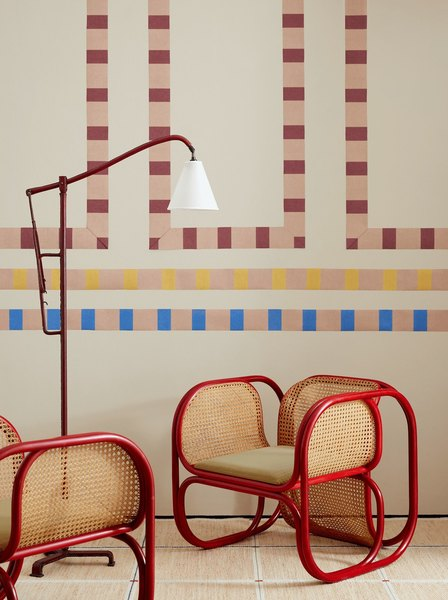
CRVI001436Unidentified - Interior with striped walls and bentwood chairs

CRVI000217Yayoi Kusama - Infinity Mirror Room — Phalli's Field (or Floor Show)
Kusama standing in the work · via David Zwirner · 1965
Kusama standing in the work · via David Zwirner · 1965

CRVI000408G.L.O.B.E. & Whiz Kid - Play That Beat Mr. D.J.
Designer unknown · Tommy Boy · 1983
Designer unknown · Tommy Boy · 1983

CRVI001808James Rosenquist - Silo
1964
1964

CRVI000107Masuteru Aoba - The Bread Is For Peace
戦争に使うパンはない · anti-war poster · carries an Arthur Koestler passage in twelve languages · c1975
戦争に使うパンはない · anti-war poster · carries an Arthur Koestler passage in twelve languages · c1975

CRVI000676Tom Alberty, Bobby Doherty - The Golden Age of Pods
New York, March 18-31, 2019 · 2019
New York, March 18-31, 2019 · 2019

CRVI001454Nathalie Du Pasquier - Untitled
2013
2013

CRVI000245Peter Bentley - Urgent Copy
Cover for Anthony Burgess · Penguin
Cover for Anthony Burgess · Penguin

CRVI000837Ottagono - Ottagono 66
settembre 1982 · anno 17 · 1982
settembre 1982 · anno 17 · 1982

CRVI001845Unidentified - Red and white zigzag composition

CRVI002238Gunta Stölzl - Jacquard weaving

CRVI002045Jenny Saville - Rupture
2020
2020

CRVI000038John Cage - Early Electronic And Tape Music
Designed by Mountain · Sub Rosa · 2014
Designed by Mountain · Sub Rosa · 2014

CRVI000336The Bar-Kays - Soul Finger
Designer unknown · Volt · 1967
Designer unknown · Volt · 1967

CRVI001827Victor Vasarely - Sinlag II (Blue with Red)

CRVI001914James Turrell - Raethro (Red)
1968
1968

CRVI000684C.A. Wisely - Ghost World
Hand-painted Ghanaian film poster
Hand-painted Ghanaian film poster

CRVI001158John Scofield - Hand Jive
Designed by Mark Larson, photograph by Patti Perret · Blue Note CDP 7243 8 27327 2 3 · 1994
Designed by Mark Larson, photograph by Patti Perret · Blue Note CDP 7243 8 27327 2 3 · 1994

CRVI001201Osibisa - Heads
Painting by Mati Klarwein · Decca · 1972
Painting by Mati Klarwein · Decca · 1972

CRVI002240unattributed - Overlapping concentric colour discs, quartered

CRVI000482Graeme James - War and AI
The Economist, June 22-28, 2024 · 2024
The Economist, June 22-28, 2024 · 2024

CRVI000681Heavy J - Akira
Hand-painted Ghanaian mobile cinema poster
Hand-painted Ghanaian mobile cinema poster

CRVI000121Tadanori Yokoo - Word & Image
The Museum of Modern Art, New York, January 24 – March 10 · 1968
The Museum of Modern Art, New York, January 24 – March 10 · 1968

CRVI000116Tadanori Yokoo - Made in Japan, Tadanori Yokoo, Having Reached a Climax at the Age of 29, I Was Dead
Self-portrait poster · 1965
Self-portrait poster · 1965

CRVI002047Jenny Saville - Untitled

CRVI001679Carlo Carrà - Portrait of Marinetti
1915
1915

CRVI000318Tosca - Suzuki
Designer unknown · G-Stone · 2000
Designer unknown · G-Stone · 2000

CRVI000580Alvin Lustig - Staff
Look magazine staff publication · cover dated 3·28·44 · 1944–45
Look magazine staff publication · cover dated 3·28·44 · 1944–45

CRVI000762Jakub Erol - Obcy — 8 pasażer „Nostromo”
Alien · Polish film poster · 1980
Alien · Polish film poster · 1980

CRVI001777Unidentified - Red impasto composition

CRVI000137Shigeo Fukuda - [Poster: ring of figures on dark red]
Title not established
Title not established

CRVI000432Belle and Sebastian - If You're Feeling Sinister
Designer unknown · Jeepster Records · 1996
Designer unknown · Jeepster Records · 1996

CRVI001709Alexej von Jawlensky - Girl with the Green Face
1910
1910

CRVI002331Ed Ruscha - Building under a red sky

CRVI000136Shigeo Fukuda - [Poster: figure walking off a curling sheet of paper]
Title not established
Title not established

CRVI000619Gail Bichler - Is Google Too Powerful?
The New York Times Magazine, February 25 2018 · 2018
The New York Times Magazine, February 25 2018 · 2018

CRVI001809James Rosenquist - Space Dust
1989
1989

CRVI000149Shigeo Fukuda - The Marriage of Figaro - Teatr Narodowy Warsaw
Designed by Shigeo Fukuda
Designed by Shigeo Fukuda

CRVI002353René Magritte - The Flavour of Tears (La saveur des larmes)

CRVI001951Yayoi Kusama - No. I.Z
1960
1960

CRVI000832Seymour Chwast - Cars IV
Lithograph · calendar page · 30 × 48 cm · 1996
Lithograph · calendar page · 30 × 48 cm · 1996

CRVI000035Lee Bannon - Fantastic Plastic
Artwork by Lazerus Pit · 2012
Artwork by Lazerus Pit · 2012

CRVI000052Com Truise - Galactic Melt
Artwork by Seth Haley · 2011
Artwork by Seth Haley · 2011

CRVI000644Billy Sorrentino - The End of Code
WIRED, June 2016 · 2016
WIRED, June 2016 · 2016

CRVI001851Tadasky - E-137A

CRVI000051Tycho - Epoch
Designed by Scott Hansen · 2017
Designed by Scott Hansen · 2017

CRVI001900On Kawara - May 20, 1967
Today series · 1967
Today series · 1967

CRVI000184Designer unknown - Швейныя машины Компаніи Зингеръ — Singer Company Sewing Machines
Russian Singer emblem · advertising poster
Russian Singer emblem · advertising poster

CRVI001897On Kawara - June 19, 1967
Today series, No. 108 · 1967
Today series, No. 108 · 1967

CRVI000138Shigeo Fukuda - [Poster: red arches with figures]
Title not established
Title not established

CRVI000380Basil Kirchin - Quantum
Designer unknown · Trunk · 2003
Designer unknown · Trunk · 2003

CRVI001241Mati Klarwein - Godmother
Painting · plate V25-Godmother on the artist's own site
Painting · plate V25-Godmother on the artist's own site

CRVI002373Jan Sawka - Exodus (poster for STU's premiere of Leszek Moczulski's production)
1974
1974

CRVI001377Thelonious Monk Trio - Thelonious Monk Trio
Designer unrecorded · Esquire 75 · 1956
Designer unrecorded · Esquire 75 · 1956

CRVI000791Paul Rand - Direction Magazine exhibition poster
Offset lithograph, 1970 printing of the 1939 design · 91.4 × 61 cm · 1939
Offset lithograph, 1970 printing of the 1939 design · 91.4 × 61 cm · 1939

CRVI000787Paul Rand - Jazzways
A Year Book of Hot Music · 1946
A Year Book of Hot Music · 1946

CRVI000786Paul Rand - Sources and Resources of 20th Century Design
International Design Conference in Aspen · 1966
International Design Conference in Aspen · 1966

CRVI002145Barbara Kruger - Untitled (I shop therefore I am)

CRVI001056Takenobu Igarashi - Cover for IDEA No. 130
Magazine cover · Seibundo Shinkosha, Tokyo · 1975
Magazine cover · Seibundo Shinkosha, Tokyo · 1975

CRVI001952Unidentified - Yayoi Kusama before an Infinity Net

CRVI001271Art Blakey & The Jazz Messengers - Indestructible
Designed by Reid Miles, photograph by Francis Wolff · Blue Note 4193 · 1966
Designed by Reid Miles, photograph by Francis Wolff · Blue Note 4193 · 1966

CRVI001199The Last Poets - This Is Madness
Painting by Mati Klarwein · Douglas 7 · 1971
Painting by Mati Klarwein · Douglas 7 · 1971

CRVI001187Mati Klarwein - The Last Poets, This Is Madness — back cover painting
Painting · 1971
Painting · 1971

CRVI001192Mati Klarwein - Jimi Hendrix
Painting
Painting

CRVI001775Jirō Yoshihara - Circle

CRVI001039Kiyoshi Awazu - Untitled poster
AGI (Alliance Graphique Internationale) member archive
AGI (Alliance Graphique Internationale) member archive

CRVI002247Mark Rothko - Untitled

CRVI000413Redhead Kingpin & The F.B.I. - A Shade Of Red
Designer unknown · Virgin · 1990
Designer unknown · Virgin · 1990

CRVI001222Mati Klarwein - Untitled
Painting · plate P16-vol2-87 on the artist's own site
Painting · plate P16-vol2-87 on the artist's own site

CRVI000576Alvin Lustig - Illuminations
Arthur Rimbaud · New Directions, New Classics NC14 · 1945
Arthur Rimbaud · New Directions, New Classics NC14 · 1945

CRVI001825Victor Vasarely - Keiho-C1
1963
1963

CRVI000198Unknown - Nope
Reaction GIF · 77 frames, 3.9s loop
Reaction GIF · 77 frames, 3.9s loop

CRVI002109Hermann Nitsch - Zonder titel

CRVI000853Richard Turley - [MTV ident — Zen Jen]
MTV ident · animated
MTV ident · animated

CRVI000630D.W. Pine, Peter Greenwood - Dear Washington, We Need to Rebuild. Can You Get Your Act Together?
TIME, April 10, 2017 · 2017
TIME, April 10, 2017 · 2017

CRVI000550D.W. Pine - Day One.
TIME, February 1-8, 2021 · 2021
TIME, February 1-8, 2021 · 2021

CRVI000690Heavy J - Battle Royale
Hand-painted Ghanaian film poster
Hand-painted Ghanaian film poster

CRVI001713Alexej von Jawlensky - Bretonische Bäuerin
1905
1905

CRVI001743Rudolf Schlichter - Lady with a Red Scarf

CRVI001048 - ANTI-WAR AND LIBERATION

CRVI000875John Provencher - [Bloomberg, weather]
Bloomberg Businessweek
Bloomberg Businessweek

CRVI000713Helado Negro - The Last Sound On Earth
Designed by Robert Beatty · 2025
Designed by Robert Beatty · 2025

CRVI000132Tadanori Yokoo - The 5th International Biennial Exhibition of Prints in Tokyo
The National Museum of Modern Art, Tokyo · 11.2–12.15 · 1966
The National Museum of Modern Art, Tokyo · 11.2–12.15 · 1966

CRVI001691Luigi Russolo - La Rivolta
1911
1911

CRVI000862Julian Stanczak - Sequential Chroma
Screen print on paper · 76.8 × 65.4 cm · 1978
Screen print on paper · 76.8 × 65.4 cm · 1978

CRVI000700Heavy J - Sister Act
Hand-painted Ghanaian film poster
Hand-painted Ghanaian film poster

CRVI000373Mint Condition - Meant To Be Mint
Designer unknown · Perspective · 1991
Designer unknown · Perspective · 1991

CRVI002221Anni Albers - Design for a 1926 unexecuted wall hanging
1926
1926

CRVI001855Davis Lisboa - Robert Filliou 32
2024
2024

CRVI001810Tom Wesselmann - Still life
1963
1963

CRVI000546Emily Kimbro - The 50 Best BBQ Joints
Texas Monthly, November 2021 · 2021
Texas Monthly, November 2021 · 2021

CRVI001787Unidentified - Red chevron composition

CRVI001079Kim Laughton - Untitled

CRVI001043Kiyoshi Awazu - Contemporary Print Exhibition, 50 Earlham Street Gallery, London
Poster · 1981
Poster · 1981

CRVI000491Matt Huynh - If Trump Wins
The Atlantic, January/February 2024 · 2024
The Atlantic, January/February 2024 · 2024

CRVI000444David Pelham - The Drought
Cover for J. G. Ballard · Penguin Science Fiction · 1974
Cover for J. G. Ballard · Penguin Science Fiction · 1974

CRVI000709Heavy J - I Think You Should Leave
Hand-painted Ghanaian film poster
Hand-painted Ghanaian film poster

CRVI001045Kiyoshi Awazu - Untitled poster

CRVI001976Unidentified - Head against a floral ground

CRVI002147Barbara Kruger - Installation with text

CRVI000632Michael Goesele, Justin Metz - Pop Go the Weasels
Newsweek, November 17, 2017 · 2017
Newsweek, November 17, 2017 · 2017

CRVI000702Heavy J - Raising Arizona
Hand-painted Ghanaian film poster
Hand-painted Ghanaian film poster

CRVI000512D.W. Pine - Unprecedented.
TIME, April 24/May 1, 2023 · 2023
TIME, April 24/May 1, 2023 · 2023

CRVI001690Luigi Russolo - Chioma
1910–1911
1910–1911

CRVI001113unattributed - Olivetti — cover with geometric panels
Designer unrecorded
Designer unrecorded

CRVI001981Amy Sherald - Woman in a spotted dress

CRVI001817Pauline Boty - With Love to Jean-Paul Belmondo

CRVI001931Julian Schnabel - Plate painting

CRVI001798Jasper Johns - Target with Plaster Casts
1955
1955

CRVI000715Hunx And His Punx - Walk Out On This World
Designed by Robert Beatty · 2025
Designed by Robert Beatty · 2025

CRVI002362Amy Sherald - As Soft as She Is…
2022
2022

CRVI001285The Gil Mellé Quartet - Mellé Plays Primitive Modern
Designer unrecorded · Prestige 7040 · 1956
Designer unrecorded · Prestige 7040 · 1956

CRVI001128Donald Byrd - Black Byrd
Artwork by Eileen Anderson, photograph by Art Hanson · Blue Note BN-LA047-F · 1973
Artwork by Eileen Anderson, photograph by Art Hanson · Blue Note BN-LA047-F · 1973

CRVI001838Carlos Cruz-Diez - Couleur additive
1970
1970

CRVI000847domus - domus 1112
May 2026 · 2026
May 2026 · 2026

CRVI001092Kim Laughton - Untitled

CRVI000761Waldemar Świerzy - Czas apokalipsy
Apocalypse Now · Polish film poster · 1981
Apocalypse Now · Polish film poster · 1981

CRVI002099Gilbert & George - Doubles

CRVI000545James Van Fleteren - Build a Better Breakfast Sandwich
EatingWell, May 2021 · 2021
EatingWell, May 2021 · 2021

CRVI001216Pharoah Sanders - Karma
Designed by Robert & Barbara Flynn, photograph by Chuck Stewart · Impulse! AS-9181 · 1969
Designed by Robert & Barbara Flynn, photograph by Chuck Stewart · Impulse! AS-9181 · 1969

CRVI001223Mati Klarwein - Untitled
Painting · plate P17-vol2-87 on the artist's own site
Painting · plate P17-vol2-87 on the artist's own site

CRVI001780Atsuko Tanaka - Electric Dress
1956
1956

CRVI000730Robert Beatty - Floodgate Companion
Spread · self-published
Spread · self-published

CRVI001628Kees van Dongen - Modjesko, Soprano Singer
1908
1908

CRVI001666Robert Delaunay - Rythme n° 1
1912
1912

CRVI001047 - Japanese poster for Jean-Luc Godard's 'Week End'
Film poster
Film poster

CRVI002016Zeng Fanzhi - Van Gogh

CRVI000698Heavy J - Tampopo
Hand-painted Ghanaian film poster
Hand-painted Ghanaian film poster

CRVI002168Fernando Botero - The Study of Vermeer

CRVI001245Mati Klarwein - Clone (unfinished)
Painting · plate V32-clone-unfinished on the artist's own site
Painting · plate V32-clone-unfinished on the artist's own site

CRVI002156William Eggleston - Untitled

CRVI001249Mati Klarwein - Nativity
Painting · plate V03-Nativity on the artist's own site
Painting · plate V03-Nativity on the artist's own site

CRVI000725The Weeknd - Dawn FM
Designed by Robert Beatty · 2022
Designed by Robert Beatty · 2022

CRVI001521Barnett Newman - Onement I
1948
1948

CRVI001710Alexej von Jawlensky - Portrait of Alexander Sakharoff
1909
1909

CRVI001793Jules Olitski - Born in Snovsk
1962
1962

CRVI001164Lee Morgan - Cornbread
Designed by Reid Miles, photograph by Francis Wolff · Blue Note BST 84222 · 1967
Designed by Reid Miles, photograph by Francis Wolff · Blue Note BST 84222 · 1967

CRVI000784Ivan Chermayeff - By the Sword Divided
Mobil Masterpiece Theatre · 1986
Mobil Masterpiece Theatre · 1986

CRVI000711Tame Impala - Disciples
Designed by Robert Beatty · 2015
Designed by Robert Beatty · 2015

CRVI000445John Griffith - The Black Cloud
Cover for Fred Hoyle · Penguin
Cover for Fred Hoyle · Penguin

CRVI001638Emil Nolde - Red-Haired Girl
1919
1919

CRVI001532Alexandre Hogue - Crucified Land
1939
1939

CRVI002022Bharti Kher - Untitled

CRVI000843domus - domus 1109
February 2026 · 2026
February 2026 · 2026

CRVI001108Martin Wong - Portrait of Mikey Piñero at Ridge Street and Stanton
Acrylic on canvas, 72 × 72 in · also titled “La Vera de Nuyorico: Miguel Piñero” · 1985
Acrylic on canvas, 72 × 72 in · also titled “La Vera de Nuyorico: Miguel Piñero” · 1985

CRVI001714Heinrich Campendonk - Bucolic Landscape
1913
1913

CRVI001030Adrian Ghenie - Untitled painting
Oil on canvas · Sold Sotheby's London
Oil on canvas · Sold Sotheby's London

CRVI001042Kiyoshi Awazu - Poster Nippon
Screenprint · LACMA, Marc Treib Collection · 1972
Screenprint · LACMA, Marc Treib Collection · 1972

CRVI002246Mark Rothko - Untitled

CRVI000691Mr. Nana Agyq - Austin Powers in Goldmember
Hand-painted Ghanaian film poster
Hand-painted Ghanaian film poster

CRVI000252Lech Majewski - Ras le cœur
Film Poster Designed By Lech Majewski · 1980 · 1980
Film Poster Designed By Lech Majewski · 1980 · 1980

CRVI001675Giacomo Balla - Self-Portrait
1902
1902

CRVI000425Bob Thompson and His Orchestra & Chorus - Just For Kicks
Designer unknown · RCA Victor · 1959
Designer unknown · RCA Victor · 1959

CRVI001142Jackie McLean - Demon's Dance
Designed by Bob Venosa, artwork by Mati Klarwein · Blue Note BST 84345 · 1970
Designed by Bob Venosa, artwork by Mati Klarwein · Blue Note BST 84345 · 1970

CRVI000032Earle Brown - Music By Earle Brown
Artwork by Judith Lerner · Composers Recordings Inc. · 1974
Artwork by Judith Lerner · Composers Recordings Inc. · 1974

CRVI001488Unidentified - Dada photomontage naming Raoul Hausmann

CRVI000358Stevie Wonder - Fulfillingness' First Finale
Designer unknown · Tamla · 1974
Designer unknown · Tamla · 1974

CRVI001372Eric Dolphy - Out There
Cover painting by Richard “Prophet” Jennings · New Jazz 8252 · 1960
Cover painting by Richard “Prophet” Jennings · New Jazz 8252 · 1960

CRVI001619Paul Ranson - Nude on a patterned ground

CRVI001830Richard Anuszkiewicz - The Fourth of the Three
1963
1963

CRVI001503Gustav Klutsis - Without Heavy Industry We Cannot Build Any Industry
Poster · 1930
Poster · 1930

CRVI001529Jack Levine - The Arrest
1983
1983

CRVI001467Albert Joseph Moore - Midsummer
1887
1887

CRVI001812Richard Hamilton - Just what is it that makes today's homes so different, so appealing?
1956
1956

CRVI002379Jan Sawka - Jan Sawka: Paintings & Constructions (exhibition poster)
1985
1985

CRVI001306June Christy - Off Beat
Designer unrecorded · Capitol T 1498 · 1960
Designer unrecorded · Capitol T 1498 · 1960

CRVI001107Martin Wong - Psychiatrists Testify: Demon Dogs Drive Man to Murder
Acrylic on canvas, 36 × 48 in · also titled “Demon Dogs Drive Man to Murder” · 1980
Acrylic on canvas, 36 × 48 in · also titled “Demon Dogs Drive Man to Murder” · 1980

CRVI001545Lois Mailou Jones - Composition with African head and figure

CRVI001275Howard McGhee - Howard McGhee
Designed by Paul Bacon · Blue Note 5012 · 1952
Designed by Paul Bacon · Blue Note 5012 · 1952

CRVI001312Martin Denny - Exotica
Photograph by Garrett-Howard · Liberty LRP 3034 · 1957
Photograph by Garrett-Howard · Liberty LRP 3034 · 1957

CRVI000397Frankie Knuckles - Beyond The Mix
Designer unknown · Virgin · 1991
Designer unknown · Virgin · 1991

CRVI00004023 Skidoo - Seven Songs
Artwork by Neville Brody · Fetish Records · 1982
Artwork by Neville Brody · Fetish Records · 1982

CRVI001228Mati Klarwein - Untitled
Painting · plate P15-vol2-82 on the artist's own site
Painting · plate P15-vol2-82 on the artist's own site

CRVI000602Unknown - Living With the Computer
New York, January 9, 1984 · 1984
New York, January 9, 1984 · 1984

CRVI001485Hannah Höch - Photomontage with a child and the letter P

CRVI001231Mati Klarwein - Untitled
Painting · plate P14-vol2-77 on the artist's own site
Painting · plate P14-vol2-77 on the artist's own site

CRVI001854Davis Lisboa - Robert Filliou 35
2024
2024

CRVI002004Otobong Nkanga - Unearthed – Sunlight
2021
2021

CRVI001546Lois Mailou Jones - Woman in a turban with masks

CRVI001310Les Baxter - 'Round The World With Les Baxter
Designer unrecorded · Capitol T 780 · 1957
Designer unrecorded · Capitol T 780 · 1957

CRVI002032Nicole Eisenman - Beer garden

CRVI000704Farkira - Oppenheimer
Hand-painted Ghanaian film poster
Hand-painted Ghanaian film poster

CRVI002077Christian Schad - Street scene with figures

CRVI000139Jutaro Itoh - Hiroshima (orange)
廣島
廣島

CRVI001835Unidentified - Striped composition

CRVI000524Cian Browne - Taylor Russell
W, January 2023 · 2023
W, January 2023 · 2023

CRVI001556Remedios Varo - Creation with Astral Rays
1955
1955

CRVI001340Chris Foss - Dune — a spacecraft
Illustration by Chris Foss
Illustration by Chris Foss

CRVI002276Frank Stella - Untitled
1974
1974

CRVI001537David Alfaro Siqueiros - Our Present Image
1947
1947

CRVI001785Akira Kanayama - Work
1952
1952

CRVI001318Tanya Tucker - TNT
Photograph by Olivier Ferrand · MCA Records AY-1104 · 1978
Photograph by Olivier Ferrand · MCA Records AY-1104 · 1978

CRVI001341unattributed - Trust
Maker unidentified
Maker unidentified

CRVI000740Robert Beatty - Untitled
Album cover · artist and title unrecorded · Trendland plate 11
Album cover · artist and title unrecorded · Trendland plate 11

CRVI001489Max Ernst - Self-Portrait
1909
1909

CRVI001737Kirill Zdanevich - Composition with bottle and figures

CRVI001630Ernst Ludwig Kirchner - Wrestlers in a Circus
1909
1909

CRVI001426Paul Signac - The Pine Tree at Saint-Tropez
1909
1909

CRVI001504Stanton Macdonald-Wright - Synchromy No. 3
1917
1917

CRVI001677Carlo Carrà - The Red Horseman
1913
1913

CRVI001072David Rudnick - Artwork for black midi

CRVI002218Josef Albers - Study for Homage to the Square: Deep Tune
1963
1963

CRVI001681Carlo Carrà - Stazione a Milano
1909
1909

CRVI001716Heinrich Campendonk - Stillleben mit Fisch
1916
1916

CRVI001433Koloman Moser - XIII. Ausstellung der Vereinigung Bildender Künstler Österreichs Secession
Poster · 1902
Poster · 1902

CRVI000185Ernst Reichl - Ulysses
Dust jacket for James Joyce's Ulysses · Random House, New York · 1934
Dust jacket for James Joyce's Ulysses · Random House, New York · 1934

CRVI001539Jacob Lawrence - Bar and Grill
1941
1941

CRVI000342Major Lance - Um, Um, Um, Um, Um, Um (Seasaint Version)
Designer unknown · Okeh · 1964
Designer unknown · Okeh · 1964

CRVI000732Robert Beatty - Untitled
Album cover · artist and title unrecorded · Trendland plate 01
Album cover · artist and title unrecorded · Trendland plate 01

CRVI001641Max Pechstein - Flusslandschaft
1907
1907

CRVI001933Sandro Chia - Surprising Novel, Chapter Four

CRVI000815Seymour Chwast - E Pluribus Bang!
Viking Press · 1970
Viking Press · 1970

CRVI001799Jasper Johns - Dancers on a Plane

CRVI002096Frank Auerbach - Head of E.O.W.

CRVI001469Aubrey Beardsley - Isolde
1895
1895

CRVI001547Lois Mailou Jones - Moon Masque
1971
1971

CRVI001533Diego Rivera - The Adoration of the Virgin
1913
1913

CRVI001424Paul Signac - Opus 217. Against the Enamel of a Background Rhythmic with Beats and Angles, Tones, and Tints, Portrait of M. Félix Fénéon in 1890
1890
1890

CRVI000111Kiyoshi Awazu - Contemporary Japanese Sculpture Exhibition — Form and Color
現代日本彫刻展 形と色 · 1973
現代日本彫刻展 形と色 · 1973

CRVI000366Dayton - Hot Fun
Designer unknown · Capitol · 1982
Designer unknown · Capitol · 1982

CRVI001736Mikhail Larionov - Le Paon
Costume design
Costume design

CRVI001544Lois Mailou Jones - Textile Design

CRVI001626Raoul Dufy - Self-Portrait
1899
1899

CRVI000596Unknown - Special 16-Page Section for New York Kids
New York, June 25, 1973 · 1973
New York, June 25, 1973 · 1973

CRVI002260Roy Lichtenstein - M-Maybe

CRVI001243Mati Klarwein - Angel, Brazilian
Painting · plate V10-Angel-Brazilian on the artist's own site
Painting · plate V10-Angel-Brazilian on the artist's own site

CRVI000456Peter Bentley - Helena
Cover for Evelyn Waugh · Penguin
Cover for Evelyn Waugh · Penguin

CRVI001978Kehinde Wiley - Two women in yellow and pink

CRVI000417Lakim Shabazz - Pure Righteousness
Designer unknown · Tuff City · 1988
Designer unknown · Tuff City · 1988

CRVI001871Unidentified - Wave composition

CRVI001853Ben Vautier - L'art est inutile / Pas d'art / À bas l'art

CRVI001196Mati Klarwein - Time
Painting
Painting

CRVI001257Alejandro Torrecilla - Satchidananda Comics #6 — Alice Coltrane
Illustration by Alejandro Torrecilla · as Torre Pentel · 2026
Illustration by Alejandro Torrecilla · as Torre Pentel · 2026

CRVI001729Stanton Macdonald-Wright - Still Life with Red Vase Synchromy

CRVI002270Sol LeWitt - Bands and arcs of colour

CRVI001044Kiyoshi Awazu - mano-dharma concert — Takehisa Kosugi
Poster
Poster

CRVI001495El Lissitzky - Flying to Earth from a Distance
1920
1920

CRVI001878Frank Stella - Gran Cairo
1962
1962

CRVI000296Miles Davis - On The Corner
Designer unknown · Columbia · 1972
Designer unknown · Columbia · 1972

CRVI002263Roy Lichtenstein - Sunrise

CRVI000621Maurizio Di Iorio - The Mutant Future of Food
WIRED, August 2018 · 2018
WIRED, August 2018 · 2018

CRVI000844domus - domus 690
gennaio 1988 · 1988
gennaio 1988 · 1988

CRVI001848Unidentified - Concentric circle composition

CRVI002152Keith Haring - Untitled
1982
1982

CRVI002261Roy Lichtenstein - Crying Girl
1964
1964

CRVI000209Unknown - First Pitch
Reaction GIF · Sister Mary Jo Sobieck · 170 frames, 5.1s loop · 2018
Reaction GIF · Sister Mary Jo Sobieck · 170 frames, 5.1s loop · 2018

CRVI002169Frank Bowling - Who's Afraid of Barney Newman
1968
1968

CRVI000773Ivan Chermayeff - Two by Forsyth
Offset lithograph · 117 × 76 cm · 1984
Offset lithograph · 117 × 76 cm · 1984

CRVI000729Robert Beatty - Floodgate Companion
Spread · self-published
Spread · self-published

CRVI000824Seymour Chwast - Master & Dog
Push Pin Graphic #57 · 1972
Push Pin Graphic #57 · 1972

CRVI002351René Magritte - The Therapist (Le thérapeute)

CRVI000688Farkira - Best in Show
Hand-painted Ghanaian film poster
Hand-painted Ghanaian film poster

CRVI000566Graeme James - The Coming Food Catastrophe
The Economist, May 21-27, 2022 · 2022
The Economist, May 21-27, 2022 · 2022

CRVI001846Unidentified - Red lines on blue

CRVI001301Bobbie Gentry - Touch 'Em With Love
Designer unrecorded · Capitol ST-234 · 1969
Designer unrecorded · Capitol ST-234 · 1969

CRVI000705Heavy J - Pee-Wee's Big Adventure
Hand-painted Ghanaian film poster
Hand-painted Ghanaian film poster

CRVI000687Heavy J - Blue Velvet
Hand-painted Ghanaian film poster · after the film by David Lynch
Hand-painted Ghanaian film poster · after the film by David Lynch

CRVI001963Mark Bradford - Untitled (detail)

CRVI000639Maurizio Cattelan, Pierpaolo Ferrari - VICE, March
VICE, March 2016 · 2016
VICE, March 2016 · 2016

CRVI000667Simon Abranowicz - How I Broke My Smartphone Addiction
GQ, November 27, 2019 · 2019
GQ, November 27, 2019 · 2019

CRVI000647Françoise Mouly, Kadir Nelson - 90th Anniversary [Eustace Tilley]
The New Yorker, February 23 2015 · 2015
The New Yorker, February 23 2015 · 2015

CRVI000477Justin Metz - The Centre Cannot Hold
The Economist, June 29-July 5, 2024 · 2024
The Economist, June 29-July 5, 2024 · 2024

CRVI000826Seymour Chwast - The Nose #11, Tricks
The Nose · 18 × 28 cm · 2005
The Nose · 18 × 28 cm · 2005

CRVI000798Joseph Beuys - [Beuys with the Eurasienstab]
Signed photograph
Signed photograph

CRVI001882Larry Bell - Glass installation

CRVI000133Tadanori Yokoo - JUN ROPÉ
Fashion advertising
Fashion advertising

CRVI000842Ottagono - Ottagono 80
marzo 1986 · anno 21 · 1986
marzo 1986 · anno 21 · 1986

CRVI000421The UMC's - Fruits Of Nature
Designer unknown · Wild Pitch · 1991
Designer unknown · Wild Pitch · 1991

CRVI001069David Rudnick - Poster for Making Time
Poster · Philadelphia
Poster · Philadelphia

CRVI001621Georges Lacombe - Marine bleue, Effet de vague
c. 1893
c. 1893

CRVI001229Pharoah Sanders - Elevation
Designed by Tim Bryant, artwork by Bodhi Wind · Impulse! AS-9261 · 1974
Designed by Tim Bryant, artwork by Bodhi Wind · Impulse! AS-9261 · 1974

CRVI000561Marshall Mckinney - Saving the Wild South
Garden & Gun, October/November 2022 · 2022
Garden & Gun, October/November 2022 · 2022

CRVI001574Georg Scholz - Exotische Prinzessin
1919
1919

CRVI002330Ed Ruscha - Norm's, La Cienega, on Fire
1964
1964

CRVI001236Mati Klarwein - Bavarian Angel
Painting · plate V11-Bavarian-Angel on the artist's own site
Painting · plate V11-Bavarian-Angel on the artist's own site

CRVI000836Ottagono - Ottagono 72
marzo 1984 · anno 19 · 1984
marzo 1984 · anno 19 · 1984

CRVI001712Alexej von Jawlensky - Blaue Vase mit Orangen
1908
1908

CRVI000497Maili Holiman - TikTok's Evolution of Digital Blackface
WIRED, September 2020 · 2020
WIRED, September 2020 · 2020

CRVI000291The Isley Brothers - Shout!
Designer unknown · RCA · 1959
Designer unknown · RCA · 1959

CRVI000406Tin Man - Neo Neo Acid
Designer unknown · Absurd Recordings · 2012
Designer unknown · Absurd Recordings · 2012

CRVI000387Conrad Schnitzler - Conal
Designer unknown · Uniton · 1981
Designer unknown · Uniton · 1981

CRVI000086Macintosh Plus - フローラルの専門店
Designer unknown · Beer On The Rug · 2011
Designer unknown · Beer On The Rug · 2011

CRVI000368Redd Hott - Redd Hott #1
Designer unknown · Venture · 1982
Designer unknown · Venture · 1982

CRVI001869Dan Flavin - Untitled (to Don Judd, Colorist) 1–5
1987
1987

CRVI001188Eric Dolphy - Iron Man
Painting by Mati Klarwein, photograph by Don Schlitten · Douglas KZ 30873 · 1971
Painting by Mati Klarwein, photograph by Don Schlitten · Douglas KZ 30873 · 1971

CRVI000215Youngblood Brass Band - Pax Volumi
Illustration by Timothy J. Reynolds · Tru Thoughts · 2013
Illustration by Timothy J. Reynolds · Tru Thoughts · 2013

CRVI000340Wilson Pickett - The Exciting Wilson Pickett
Designer unknown · Atlantic · 1966
Designer unknown · Atlantic · 1966

CRVI001057 - Playing cards

CRVI001081Kim Laughton - Untitled

CRVI002323Ed Ruscha - Honk

CRVI001269Grachan Moncur III - Evolution
Designed by Reid Miles, photograph by Francis Wolff · Blue Note 4153 · 1964
Designed by Reid Miles, photograph by Francis Wolff · Blue Note 4153 · 1964

CRVI001815Eduardo Paolozzi - Sack-o-Sauce
1948
1948

CRVI001101The Chocolate Watchband - No Way Out
Designer unrecorded · Tower T-5096 · 1967
Designer unrecorded · Tower T-5096 · 1967

CRVI002036Unidentified - Gestural painting in pink and blue

CRVI000221Yayoi Kusama - A Bouquet of Love I saw in the Universe
Photograph by Andreas Meichsner · Martin-Gropius-Bau, Berlin · 2021
Photograph by Andreas Meichsner · Martin-Gropius-Bau, Berlin · 2021

CRVI000754Away - Untitled
Holiday campaign illustration · by Robert Beatty · 2020
Holiday campaign illustration · by Robert Beatty · 2020

CRVI000374TLC - Ooooooohhh... On The TLC Tip
Designer unknown · Laface · 1992
Designer unknown · Laface · 1992

CRVI000495Justin Patrick Long - Pattern Player
Vanity Fair, October 2020 · 2020
Vanity Fair, October 2020 · 2020

CRVI002182Zhang Huan - Untitled

CRVI001917James Turrell - Acro (Red)
Corner projection · 1968
Corner projection · 1968

CRVI000260Wiktor Górka - Cabaret
Poster · 2017 · 2017
Poster · 2017 · 2017

CRVI001762Josef Albers - Red Wall
1956
1956

CRVI001239Mati Klarwein - Live
Painting · plate V23-Live on the artist's own site
Painting · plate V23-Live on the artist's own site

CRVI000689C.A. Wisely - Barton Fink
Hand-painted Ghanaian film poster · after the film by Joel and Ethan Coen
Hand-painted Ghanaian film poster · after the film by Joel and Ethan Coen

CRVI000463Richard Turley - The Underground Solution
Bloomberg Businessweek, 7 November 2011 · 2011
Bloomberg Businessweek, 7 November 2011 · 2011

CRVI000153Wynton Kelly - It's All Right!
Designed by Michael J. Malatak · 1964
Designed by Michael J. Malatak · 1964

CRVI001725František Kupka - Disks of Newton (Study for Fugue in Two Colors)
1911
1911

CRVI001452Philip Guston - Untitled (studio still life)

CRVI001161Kenny Dorham - Trompeta Toccata
Designed by Reid Miles, photograph by Francis Wolff · Blue Note BLP 4181 · 1965
Designed by Reid Miles, photograph by Francis Wolff · Blue Note BLP 4181 · 1965

CRVI001519Robert Motherwell - Open No. 122 in Scarlet and Blue
1969
1969

CRVI002173Park Seo-bo - Écriture

CRVI000320Villalobos - Fizheuer Zieheuer
Designer unknown · Playhouse · 2006
Designer unknown · Playhouse · 2006

CRVI002146Barbara Kruger - Untitled (The future belongs to those who can see it)

CRVI001147Jackie McLean - Vertigo
Designed by Patrick Roques, photograph by Francis Wolff · Blue Note LT-1085 · 2000
Designed by Patrick Roques, photograph by Francis Wolff · Blue Note LT-1085 · 2000

CRVI001982Amy Sherald - Woman in a strawberry-print dress

CRVI000517Peter B. Cury - Adele!
The Hollywood Reporter, December 7, 2023 · 2023
The Hollywood Reporter, December 7, 2023 · 2023

CRVI000098Various - Midnite Spares
Designer unknown · Efficient Space · 2016
Designer unknown · Efficient Space · 2016

CRVI000525Tom Alberty - Bon Appétit
New York, February 27-March 12, 2023 · 2023
New York, February 27-March 12, 2023 · 2023

CRVI001966Glenn Ligon - Red painting with black text

CRVI000465Unknown - Easy Target
Bloomberg Businessweek, 17 March 2014 · 2014
Bloomberg Businessweek, 17 March 2014 · 2014

CRVI001772Georges Mathieu - Le Seuil monotone

CRVI000487CSA Design/CSA Images - The Games Issue
The New York Times for Kids, December 29, 2024 · 2024
The New York Times for Kids, December 29, 2024 · 2024

CRVI000708C.A. Wisely - Heat
Hand-painted Ghanaian film poster
Hand-painted Ghanaian film poster

CRVI000275Andrzej Pągowski - 1901 Children on Strike
Film Poster · 1980 · 1980
Film Poster · 1980 · 1980

CRVI000552Thomas Alberty - This Magazine Can Help You Get an Abortion
New York, May 23-June 5, 2022 · 2022
New York, May 23-June 5, 2022 · 2022

CRVI000472Unknown - Selling Obama
Bloomberg Businessweek
Bloomberg Businessweek

CRVI000789Franc Nunoo-Quarcoo - Paul Rand: Modernist Design
Monograph on Paul Rand · 2003
Monograph on Paul Rand · 2003

CRVI000308Palais Schaumburg - Palais Schaumburg
Designer unknown · Phonogram · 1981
Designer unknown · Phonogram · 1981

CRVI000631Unknown - What Lies Ahead
WIRED, February 2017 Most Controversial · 2017
WIRED, February 2017 Most Controversial · 2017

CRVI001890Alighiero Boetti - Embroidered word square

CRVI001389Al Hansen - Joseph Beuys Stuka Dive Bomber Piece & Other Stories
Al Hansen · Slowscan vol. 20 · 2006
Al Hansen · Slowscan vol. 20 · 2006

CRVI002344Unidentified - Composition of concentric discs

CRVI001258Pharoah Sanders - Love Is Here: The Complete Paris 1975 ORTF Recordings
Photograph by Christian Rose · Transcendence Sounds 23040 · 2025
Photograph by Christian Rose · Transcendence Sounds 23040 · 2025

CRVI002366Tauba Auerbach - Flow

CRVI001811Richard Hamilton - Portrait of Hugh Gaitskell as a Famous Monster of Filmland
1964
1964

CRVI001185Robert Venosa - Untitled — winged flame figure
Painting
Painting

CRVI000511Albert Ayler - In Greenwich Village
Designed by Robert & Barbara Flynn · Impulse! · 1967
Designed by Robert & Barbara Flynn · Impulse! · 1967

CRVI000168Capability Brown - Voice
Designer unknown
Designer unknown

CRVI001852Unidentified - AN ANTHOLOGY

CRVI000685C.A. Wisely - Fargo
Hand-painted Ghanaian film poster · after the film by Joel and Ethan Coen
Hand-painted Ghanaian film poster · after the film by Joel and Ethan Coen

CRVI000045Various - Artificial Intelligence II
Artwork by Phil Wolstenholme, The Designers Republic · Warp Records · 1994
Artwork by Phil Wolstenholme, The Designers Republic · Warp Records · 1994

CRVI001782Shōzō Shimamoto - Untitled
1957
1957

CRVI001362Andrew Kuo - Charting Traxman
Chart for The New York Times · 2012-06-18 · 2012
Chart for The New York Times · 2012-06-18 · 2012

CRVI001494Alexander Rodchenko - Battleship Potemkin
Film poster · 1925
Film poster · 1925

CRVI000846domus - domus 1114
July–August 2026 · 2026
July–August 2026 · 2026

CRVI000118Tadanori Yokoo - Garuda
Offset lithograph · 1990
Offset lithograph · 1990

CRVI000683C.A. Wisely - Groundhog Day
Hand-painted Ghanaian film poster · 2021
Hand-painted Ghanaian film poster · 2021

CRVI000701C.A. Wisely - Seven Samurai
Hand-painted Ghanaian film poster
Hand-painted Ghanaian film poster

CRVI000354Wah Wah Watson - Elementary
Designer unknown · Columbia · 1976
Designer unknown · Columbia · 1976

CRVI002104Sigmar Polke - Mao
1972
1972

CRVI002239Johannes Itten - Horizontal-Vertical
1915
1915

CRVI000697C.A. Wisely - Suspiria
Hand-painted Ghanaian film poster
Hand-painted Ghanaian film poster

CRVI002262Roy Lichtenstein - Explosion

CRVI001040Kiyoshi Awazu - NOH — UCLA Asian Performing Arts Institute
Poster · The Museum of Modern Art, New York · 1981
Poster · The Museum of Modern Art, New York · 1981

CRVI001493Alexander Rodchenko - Red and Yellow
1918
1918

CRVI001540Jacob Lawrence - Dreams No. 2
1965
1965

CRVI000693Salvation - Willy Wonka and the Chocolate Factory
Hand-painted Ghanaian film poster
Hand-painted Ghanaian film poster

CRVI001832Richard Anuszkiewicz - Red, White and Blue, from 1776 USA 1976: Bicentennial Prints
1975
1975

CRVI001041Kiyoshi Awazu - Untitled poster

CRVI000695C.A. Wisely - The Royal Tenenbaums
Hand-painted Ghanaian film poster
Hand-painted Ghanaian film poster

CRVI000346The J.B.'s - Food For Thought
Designer unknown · People · 1972
Designer unknown · People · 1972

CRVI000485Javier Jaen - Gen Z: Reasons to Be Cheerful
The Economist, April 20-26, 2024 · 2024
The Economist, April 20-26, 2024 · 2024

CRVI000696Farkira - The Harder They Come
Hand-painted Ghanaian film poster
Hand-painted Ghanaian film poster

CRVI001450Philip Guston - Chair

CRVI001346Lynn Goldsmith - Woman in a striped jumpsuit on a first-aid box
Photographer unidentified
Photographer unidentified

CRVI000125Yusaku Kamekura - Expo '70
Japan World Exposition, Osaka · 'Progress and Harmony for Mankind' · 1970
Japan World Exposition, Osaka · 'Progress and Harmony for Mankind' · 1970

CRVI002046Jenny Saville - Vis and Ramin
2018
2018

CRVI001695Ivo Pannaggi - Treno in corsa

CRVI002048Jenny Saville - Gaze
2021–2024
2021–2024

CRVI000197Unknown - Hmm
Reaction GIF · Alonzo Mourning courtside · 42 frames, 4.2s loop
Reaction GIF · Alonzo Mourning courtside · 42 frames, 4.2s loop

CRVI000167Albert Ayler - New Grass
Designer unknown · 1969
Designer unknown · 1969

CRVI001837Unidentified - Vertical stripe relief

CRVI002103Sigmar Polke - Schokoladenbild (Chocolate Painting)
1964
1964

CRVI000633D.W. Pine, Edel Rodriguez - Total Meltdown
TIME, October 24 2016 · 2016
TIME, October 24 2016 · 2016

CRVI000200Unknown - Nope
Reaction GIF · Prince · 22 frames, 1.5s loop
Reaction GIF · Prince · 22 frames, 1.5s loop

CRVI000355Isaac Hayes - ...To Be Continued
Designer unknown · Enterprise · 1970
Designer unknown · Enterprise · 1970

CRVI001131Gene Harris & The Three Sounds - Live At The 'It Club'
Designed by Patrick Roques · Blue Note 7243 8 35338 · 1996
Designed by Patrick Roques · Blue Note 7243 8 35338 · 1996

CRVI000191Unknown - Confused
Reaction GIF · Winona Ryder at the 2017 SAG Awards · 67 frames, 4.5s loop · 2017
Reaction GIF · Winona Ryder at the 2017 SAG Awards · 67 frames, 4.5s loop · 2017

CRVI000266Roman Cieślewicz - J.M.K. Hellcat
Theatre Poster · 1979 · 1979
Theatre Poster · 1979 · 1979

CRVI001238Mati Klarwein - Moses
Painting · plate V22-Moses on the artist's own site
Painting · plate V22-Moses on the artist's own site

CRVI002222Anni Albers - Unfinished study

CRVI002311Neo Rauch - Über den Dächern
2014
2014

CRVI001565Otto Dix - Self-Portrait as Mars

CRVI001682Gino Severini - Untitled (Futurist crowd)
1911
1911

CRVI001828Victor Vasarely - Geometric composition

CRVI001961Unidentified - Dense layered abstraction

CRVI001936Chris Ofili - Within Reach
2003
2003

CRVI001218Mati Klarwein - Untitled
Painting · plate P18-vol2-88 on the artist's own site
Painting · plate P18-vol2-88 on the artist's own site

CRVI000208Unknown - Whoa
Reaction GIF · Chris Farley · 32 frames, 1.4s loop
Reaction GIF · Chris Farley · 32 frames, 1.4s loop

CRVI002208Wassily Kandinsky - Moscow I
1916
1916

CRVI000874John Provencher - The Russian Bot Army That Conquered Online Poker
Bloomberg Businessweek, 20 September 2024 · 2024
Bloomberg Businessweek, 20 September 2024 · 2024

CRVI000256Wiesław Wałkuski - The Idiots
Film Poster Designed By Wiesław Wałkuski · 1999 · 1999
Film Poster Designed By Wiesław Wałkuski · 1999 · 1999

CRVI000699Mr. Nana Agyq - Stop Making Sense
Hand-painted Ghanaian film poster
Hand-painted Ghanaian film poster

CRVI002219Anni Albers - Design 11/25 for Jacquard

CRVI001515Ilya Chashnik - Vertical Axes in Movement

CRVI001622André Derain - Ball of Soldiers in Suresnes
1903
1903

CRVI002015Zeng Fanzhi - Mask series (watermelon)

CRVI001345unattributed - Jodorowsky's Dune
Maker unidentified · 2013
Maker unidentified · 2013

CRVI001457Unidentified - Portrait of a young man in a red robe

CRVI001038Kiyoshi Awazu - The Friends
Offset lithograph, 28½ × 20¼ in. · LACMA, Marc Treib Collection · 1969
Offset lithograph, 28½ × 20¼ in. · LACMA, Marc Treib Collection · 1969

CRVI002197Pablo Picasso - Pierrot and Colombina
1900
1900

CRVI001892Joseph Kosuth - Four Colors Four Words
1966
1966

CRVI000583Artist unknown - A Christmas Carol
Federal Theatre for Youth · Works Progress Administration in Ohio · between 1936 and 1941
Federal Theatre for Youth · Works Progress Administration in Ohio · between 1936 and 1941

CRVI001034Adrian Ghenie - Untitled painting
Published in Interview
Published in Interview

CRVI001437Franz Karl Delavilla - Grosses Gartenfest: Die Tänzerin und die Marionette
Poster · 1907
Poster · 1907

CRVI000339Arif Mardin - Glass Onion
Designer unknown · Atlantic · 1969
Designer unknown · Atlantic · 1969

CRVI001566Otto Dix - Dying Warrior

CRVI001209Sonny Rollins - The Sound Of Sonny
Designed by Paul Bacon, photograph by Paul Weller · Riverside Records RLP 12-241 · 1957
Designed by Paul Bacon, photograph by Paul Weller · Riverside Records RLP 12-241 · 1957

CRVI002356René Magritte - The Liberator (Le Libérateur)
1947
1947

CRVI000115Yusaku Kamekura - Tokyo 1964 — Starting Line
Official poster, Games of the XVIII Olympiad · photograph Osamu Hayasaki · 1964
Official poster, Games of the XVIII Olympiad · photograph Osamu Hayasaki · 1964

CRVI001816Pauline Boty - Colour Her Gone
1962
1962

CRVI001564Otto Dix - The Street of Brothels
1916
1916
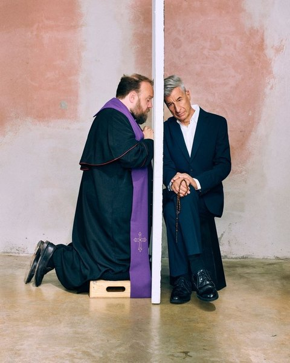
CRVI001420Maurizio Cattelan - The Confessional
2026
2026

CRVI001323Peter Lloyd - Untitled airbrush illustration
Illustration by Peter Lloyd
Illustration by Peter Lloyd

CRVI002207Wassily Kandinsky - Improvisation 28 (second version)
1912
1912

CRVI000201Unknown - Ohhhhh
Reaction GIF · 54 frames, 2.2s loop
Reaction GIF · 54 frames, 2.2s loop

CRVI001977Kehinde Wiley - Two figures against a floral ground

CRVI001097Kim Laughton - Untitled

CRVI001850Unidentified - Concentric circles on black

CRVI002335Neo Rauch - Figures in orange and yellow before a lit interior

CRVI000257Lech Majewski - Thank God It's Friday
Film Poster Designed By Lech Majewski · 1979 · 1979
Film Poster Designed By Lech Majewski · 1979 · 1979

CRVI001720Sonia Delaunay - Flamenco Singers (Large Flamenco)
1915–16
1915–16

CRVI001669María Blanchard - La Comulgante (Girl at Her First Communion)
1914
1914

CRVI000345Sly & The Family Stone - A Whole New Thing (Bonus Tracks Edition) [2007 Remaster]
Designer unknown · Epic · 1967
Designer unknown · Epic · 1967

CRVI000194Unknown - Dunno
Reaction GIF · 50 frames, 3.5s loop
Reaction GIF · 50 frames, 3.5s loop

CRVI002120Alice Neel - Kenneth Doolittle
1931
1931

CRVI002137Martha Rosler - Photo Op, from House Beautiful: Bringing the War Home
c. 2004–2008
c. 2004–2008

CRVI001150Jimmy Smith & Wes Montgomery - Jimmy & Wes: The Dynamic Duo
Designed by Acy Lehman, photograph by Chuck Stewart · Verve Records V6-8678 · 1966
Designed by Acy Lehman, photograph by Chuck Stewart · Verve Records V6-8678 · 1966

CRVI001348unattributed - Jodorowsky's Dune — theatrical poster
Maker unidentified · 2013
Maker unidentified · 2013

CRVI000371The Neville Brothers - Fiyo On The Bayou
Designer unknown · ASM · 1981
Designer unknown · ASM · 1981

CRVI001557Remedios Varo - Creation of the Birds
1957
1957

CRVI001112El Lissitzky - Die Kunstismen / Les Ismes de l’Art / The Isms of Art, 1914–1924
Book cover · edited by El Lissitzky and Hans Arp · Eugen Rentsch, Erlenbach-Zürich · 1925
Book cover · edited by El Lissitzky and Hans Arp · Eugen Rentsch, Erlenbach-Zürich · 1925

CRVI002314Neo Rauch - Untitled

CRVI000612Unknown - Scenes From New York's Therapy Crisis
New York, October 20, 1997 · 1997
New York, October 20, 1997 · 1997

CRVI001272Jimmy Smith - Softly As A Summer Breeze
Designed by Reid Miles, photograph by Jean-Pierre Leloir · Blue Note 4200 · 1965
Designed by Reid Miles, photograph by Jean-Pierre Leloir · Blue Note 4200 · 1965

CRVI001066David Rudnick - Terrain (front)
Published by It's Nice That
Published by It's Nice That

CRVI001740David Bomberg - In the Hold
1914
1914

CRVI000674Magnus Berger, Jennifer Pastore, Campbell Addy - The Innovators Issue
WSJ. Magazine, November 2019 · 2019
WSJ. Magazine, November 2019 · 2019

CRVI001573Georg Scholz - Street scene with the Upper Silesia plebiscite
1922
1922

CRVI002189René Magritte - The Difficult Crossing
1926
1926

CRVI001184Robert Venosa - Untitled — luminous tree
Painting
Painting

CRVI001100Kim Laughton - Untitled
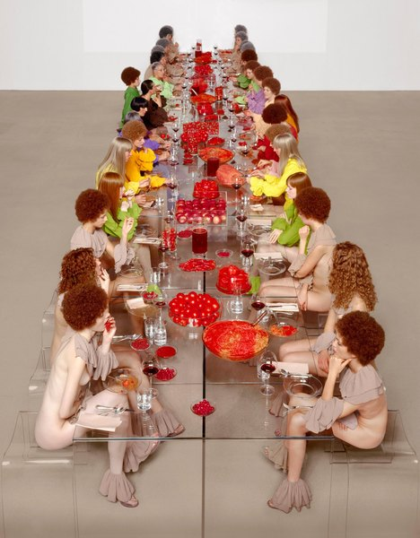
CRVI001943Vanessa Beecroft - Performance, long table

CRVI001651Juan Gris - Portrait of Maurice Raynal
1911
1911

CRVI001344unattributed - Tron — the Solar Sailer deck, film still
Photographer unidentified · 1982
Photographer unidentified · 1982

CRVI001109Constantin Aladjalov - International Exhibition of Modern Art, arranged by the Société Anonyme for the Brooklyn Museum
Exhibition catalogue cover · Brooklyn Museum, November–December 1926 · 1926
Exhibition catalogue cover · Brooklyn Museum, November–December 1926 · 1926

CRVI001033Adrian Ghenie - Untitled painting
Galerie Judin, Berlin
Galerie Judin, Berlin

CRVI001103Utagawa Yoshifusa - Kiyomori's Visit to Nunobiki Waterfall: The Ghost of Yoshihira Taking Revenge on Nanba
Woodblock-printed triptych (nishiki-e), ink and color on paper · Edo period · The Metropolitan Museum of Art, New York · 1856
Woodblock-printed triptych (nishiki-e), ink and color on paper · Edo period · The Metropolitan Museum of Art, New York · 1856

CRVI000369The Deele - Eyes Of A Stranger
Designer unknown · Solar · 1987
Designer unknown · Solar · 1987

CRVI000363Billy Paul - 360 Degrees of Billy Paul
Designer unknown · Philadelphia International · 1972
Designer unknown · Philadelphia International · 1972

CRVI001212Thelonious Monk - Underground
Designed by John Berg, Richard Mantel, photograph by Horn/Griner · Columbia CS 9632 · 1968
Designed by John Berg, Richard Mantel, photograph by Horn/Griner · Columbia CS 9632 · 1968

CRVI001829Victor Vasarely - Vega-Anneaux

CRVI000113Kiyoshi Awazu - La Chinoise
Japanese poster for the first Japanese release of Godard's film · Athos · 1967
Japanese poster for the first Japanese release of Godard's film · Athos · 1967

CRVI000225Unknown - Bumblebee coffin
Ghanaian fantasy coffin · The Art Underground, Museum of International Folk Art, Santa Fe
Ghanaian fantasy coffin · The Art Underground, Museum of International Folk Art, Santa Fe

CRVI000351Parlet - Pleasure Principle
Designer unknown · Casablanca · 1978
Designer unknown · Casablanca · 1978

CRVI000171Sonny Rollins - The Sound of Sonny
Designer unknown · Riverside RLP 12-241 · 1957
Designer unknown · Riverside RLP 12-241 · 1957

CRVI001569Christian Schad - Zwei Mädchen
1928
1928

CRVI000031Telefon Tel Aviv - Map of What Is Effortless
Designed by Joshua Eustis, Charles Cooper · Hefty Records · 2004
Designed by Joshua Eustis, Charles Cooper · Hefty Records · 2004

CRVI000569Anita Kunz - No Photos, Please!
The New Yorker, August 29, 2022 · 2022
The New Yorker, August 29, 2022 · 2022
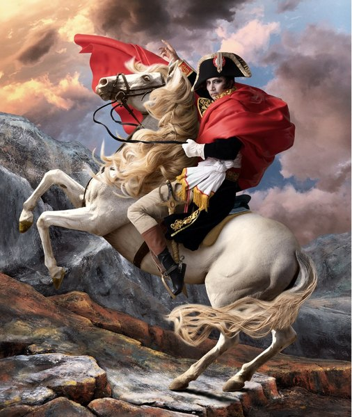
CRVI002179Yasumasa Morimura - Self-portrait after David's Napoleon

CRVI001930Georg Baselitz - Woodman (Waldarbeiter)
1969
1969

CRVI000148Pharoah Sanders - Tauhid
Designed by Robert (Viceroy) Flynn · Impulse! AS-9138 · 1966
Designed by Robert (Viceroy) Flynn · Impulse! AS-9138 · 1966

CRVI001841Unidentified - Concentric dotted composition

CRVI000250Peter Bentley - The Wanting Seed
Cover for Anthony Burgess · Penguin
Cover for Anthony Burgess · Penguin

CRVI001211Bill Evans Trio - On A Friday Evening
Designed by Christopher Leckie, photograph by Jerome Knill, Phil Bray, Scott Lyons · Craft Recordings CR00301 · 2021
Designed by Christopher Leckie, photograph by Jerome Knill, Phil Bray, Scott Lyons · Craft Recordings CR00301 · 2021

CRVI000313Shut Up and Dance - Dance Before the Police Come
Designer unknown · p And Dance · 1991
Designer unknown · p And Dance · 1991

CRVI000165Bonzo Dog Band - The Doughnut in Granny's Greenhouse
Designed by Vivian Stanshall
Designed by Vivian Stanshall

CRVI001726František Kupka - Reminiscence of a Cathedral
1920/23
1920/23

CRVI002110Christian Boltanski - Installation with hung clothing

CRVI001665Robert Delaunay - Champs de Mars: The Red Tower
1911/23
1911/23

CRVI001204Mati Klarwein - La Profeta
Painting · plate R17-vol3-59 on the artist's own site
Painting · plate R17-vol3-59 on the artist's own site

CRVI000770Paula Scher - Best of Jazz
Lithograph · 91.1 × 68.9 cm · 1979
Lithograph · 91.1 × 68.9 cm · 1979

CRVI000522Gian Gisiger - AȘAP Rocky
Highsnobiety · 2023
Highsnobiety · 2023

CRVI001463John William Waterhouse - The Magic Circle
1886
1886
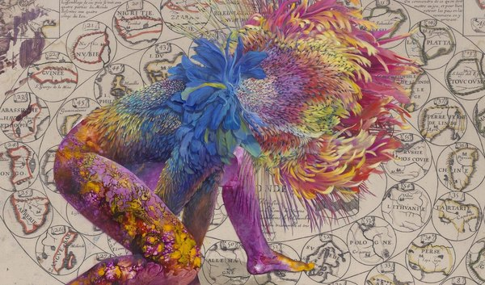
CRVI001997Wangechi Mutu - Figure on a map ground

CRVI002236unattributed - Bauhaus weaving, banded stripes in blue, apricot and black

CRVI001308Lee Morgan - The Procrastinator
Designed by Patrick Roques, photograph by Francis Wolff · Blue Note LT-1044 · 1978
Designed by Patrick Roques, photograph by Francis Wolff · Blue Note LT-1044 · 1978

CRVI001106Utagawa Kuniyoshi - Kurō Hōgan Yoshitsune at Horikawa (Chapter 31, Makibashira)
Woodblock print (nishiki-e), ōban · from Genji kumo ukiyo-e awase · Published by Iseya Ichibei · c. 1845–1846
Woodblock print (nishiki-e), ōban · from Genji kumo ukiyo-e awase · Published by Iseya Ichibei · c. 1845–1846

CRVI002057Christina Quarles - Fold Gently
2023
2023

CRVI001451Philip Guston - Gladiators
1940
1940

CRVI001396Giorgio de Chirico - The Evil Genius of a King
Giorgio de Chirico · 1914 · 1914
Giorgio de Chirico · 1914 · 1914

CRVI001656Juan Gris - Man in the Café
1912
1912

CRVI001460William Morris - Violet and Columbine
Textile · 1883
Textile · 1883

CRVI002204Fernand Léger - Houses in the Trees (Landscape No. 3)
1914
1914

CRVI001730Arthur Dove - Foghorns
1929
1929

CRVI002090Francis Bacon - Study after Velázquez's Portrait of Pope Innocent X

CRVI001186Aïyb Dieng - Rhythmagick
Designed by Aldo Sampieri, painting by Mati Klarwein, photograph by Thi-Linh Le · Subharmonic SD7021-2 · 1997
Designed by Aldo Sampieri, painting by Mati Klarwein, photograph by Thi-Linh Le · Subharmonic SD7021-2 · 1997

CRVI001027Adrian Ghenie - Charles Darwin as a young man
Oil on canvas, 49 × 32.5 × 4.5 cm · 2014
Oil on canvas, 49 × 32.5 × 4.5 cm · 2014

CRVI001025Gustave Courbet - La Voyante (La Somnambule)
Oil on canvas · Musée des Beaux-Arts et d'Archéologie, Besançon · c. 1865
Oil on canvas · Musée des Beaux-Arts et d'Archéologie, Besançon · c. 1865

CRVI000530Tom Alberty - Worth Less
New York, July 17-30, 2023 · 2023
New York, July 17-30, 2023 · 2023

CRVI001221Mati Klarwein - Untitled
Painting · plate P19-vol2-90 on the artist's own site
Painting · plate P19-vol2-90 on the artist's own site

CRVI002258Roy Lichtenstein - Shipboard Girl

CRVI000310Doris Norton - Artificial Intelligence
Designer unknown · Globo · 1985
Designer unknown · Globo · 1985

CRVI000878Maurice Denis - Annonciation d’Assise
Huile sur carton · 54,5 × 72 cm · 1914
Huile sur carton · 54,5 × 72 cm · 1914

CRVI000347Funkadelic - Standing On The Verge Of Getting It On
Designer unknown · Westbound · 1974
Designer unknown · Westbound · 1974

CRVI002069Unidentified - Gestural painting in blue and red

CRVI002298Kerry James Marshall - Untitled

CRVI000515Gian Gisiger - NewJeans
Highsnobiety · 2023
Highsnobiety · 2023

CRVI001405Duane Hanson - Bodybuilder
Duane Hanson · 1989 · designed 1989, executed 1992 · bronze, polychromed · 1989
Duane Hanson · 1989 · designed 1989, executed 1992 · bronze, polychromed · 1989

CRVI000665Ryan McGinley - The Long Adolescence of Lucas Hedges
GQ, March 2019 · 2019
GQ, March 2019 · 2019
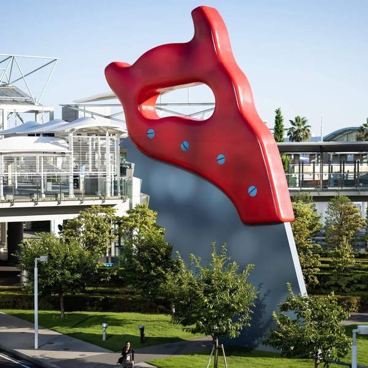
CRVI002251Claes Oldenburg and Coosje van Bruggen - Saw, Sawing
1996
1996

CRVI002026Neo Rauch - Entfaltung
2008
2008

CRVI001090Kim Laughton - Untitled

CRVI000192Unknown - Aviators
Reaction GIF · Tom Cruise putting on aviators · 55 frames, 2.2s loop
Reaction GIF · Tom Cruise putting on aviators · 55 frames, 2.2s loop

CRVI001326unattributed - Tron
Maker unidentified · 1982
Maker unidentified · 1982

CRVI000521Robert Vargas - Pharrell Descends on Paris
GQ, September 2023 · 2023
GQ, September 2023 · 2023

CRVI000143Kenny Drew - This Is New
Designed by Paul Bacon · 1957
Designed by Paul Bacon · 1957

CRVI002205Fernand Léger - The Staircase
1913
1913

CRVI001507David Bomberg - Ju-Jitsu
1913
1913
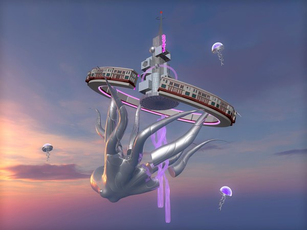
CRVI002013Cao Fei - Duotopia

CRVI001655Juan Gris - Portrait of Germaine Raynal
1912
1912

CRVI001818Pauline Boty - Big Jim Colosimo
1963
1963

CRVI000356The Bar-Kays - Money Talks
Designer unknown · Stax · 1978
Designer unknown · Stax · 1978

CRVI001070Lo-Key? - Where Dey At?
Designed by Kevin Hosmann, photograph by Eddie Wolfl · Perspective Records 28968 1003 2 · 1992
Designed by Kevin Hosmann, photograph by Eddie Wolfl · Perspective Records 28968 1003 2 · 1992

CRVI002316Neo Rauch - Untitled

CRVI002312Neo Rauch - Der Felsenwirt
2014
2014

CRVI001077Kim Laughton - Untitled
Published by Real Life
Published by Real Life

CRVI001087Kim Laughton - Untitled

CRVI002375Unidentified - Reclining striped figure with small watching heads

CRVI000196Unknown - Hello
Reaction GIF · 40 frames, 2.8s loop
Reaction GIF · 40 frames, 2.8s loop

CRVI001595Tom Blackwell - Shatzi
1978
1978

CRVI000199Unknown - Nope
Reaction GIF · James Harden · 29 frames, 1.7s loop
Reaction GIF · James Harden · 29 frames, 1.7s loop

CRVI001995Jordan Casteel - Twins
2017
2017

CRVI001888Alighiero Boetti - Untitled

CRVI000277Andrzej Pągowski - State of Fear
Film Poster · 1989 · 1989
Film Poster · 1989 · 1989

CRVI001719Sonia Delaunay - Jazz
Dress or furnishing fabric · 1977 (designed 1920)
Dress or furnishing fabric · 1977 (designed 1920)

CRVI002100Gilbert & George - Stained-glass panel composition

CRVI001448Jean Dubuffet - Untitled (Hourloupe)

CRVI000694Heavy J - Vertigo
Hand-painted Ghanaian film poster
Hand-painted Ghanaian film poster
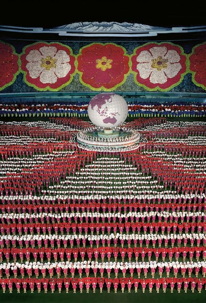
CRVI002087Andreas Gursky - Pyongyang
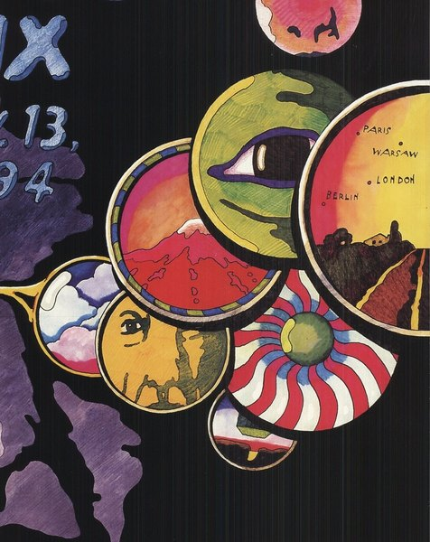
CRVI002378Unidentified - Overlapping discs with faces and city names

CRVI002043Christopher Wool - Untitled (P603)
2010
2010

CRVI001428Rirkrit Tiravanija - Untitled (newspaper painting)
Installation view · Gladstone Gallery, Art Basel Hong Kong
Installation view · Gladstone Gallery, Art Basel Hong Kong

CRVI000161Kazumasa Nagai - Peace
Designed by Kazumasa Nagai · 1989
Designed by Kazumasa Nagai · 1989

CRVI001146Jackie McLean - Right Now!
Designed by Reid Miles, photograph by Francis Wolff · Blue Note BST 84215 · 1966
Designed by Reid Miles, photograph by Francis Wolff · Blue Note BST 84215 · 1966

CRVI000538Chris Nosenzo - How to Lose $20 Billion* in 2 Days
Bloomberg Businessweek, April 12, 2021 · 2021
Bloomberg Businessweek, April 12, 2021 · 2021

CRVI000481Unknown - The Power Issue
New York, October 21-November 3, 2024 · 2024
New York, October 21-November 3, 2024 · 2024

CRVI000157Kazumasa Nagai - Exhibition of Graphic Art
Designed by Kazumasa Nagai · 1978
Designed by Kazumasa Nagai · 1978

CRVI001461John William Waterhouse - Dolce far Niente
1879
1879

CRVI001032Adrian Ghenie - Untitled painting
Published in Flaunt
Published in Flaunt

CRVI000280Mo Kolours - Mo Kolours
Designer unknown · One-Handed Music · 2014
Designer unknown · One-Handed Music · 2014

CRVI001950Yayoi Kusama - Kusama in a Foreign Country

CRVI001803Roy Lichtenstein - Okay Hot-Shot, Okay!
1963
1963

CRVI002149Barbara Kruger - Untitled (You kill time)

CRVI001015Édouard Manet - Le Fifre (The Fifer)
Oil on canvas · Musée d'Orsay, Paris · 1866
Oil on canvas · Musée d'Orsay, Paris · 1866

CRVI002112Roman Opałka - Z wnętrza
1969
1969

CRVI001464John William Waterhouse - Diogenes
1882
1882

CRVI002019Zhang Xiaogang - Bloodline Series: Big Family Series
2006
2006

CRVI000251Wiesław Wałkuski - Scruple
Film Poster Designed By Wiesław Wałkuski · 2000 · 2000
Film Poster Designed By Wiesław Wałkuski · 2000 · 2000

CRVI000565Thomas Alberty - Reasons to Love New York
New York, December 5-18, 2022 · 2022
New York, December 5-18, 2022 · 2022

CRVI000207Unknown - Wait, What
Reaction GIF · 81 frames, 3.2s loop
Reaction GIF · 81 frames, 3.2s loop

CRVI000353Betty Davis - Betty Davis
Designer unknown · Just Sunshine · 1973
Designer unknown · Just Sunshine · 1973

CRVI000615D.W. Pine, Tim O'Brien - Stormy
TIME, April 23 2018 · 2018
TIME, April 23 2018 · 2018

CRVI000455Jim Stoddart - Billion Dollar Brain
Cover for Len Deighton · Penguin · 2021
Cover for Len Deighton · Penguin · 2021

CRVI002299Kerry James Marshall - The Academy
2012
2012

CRVI001480Henri de Toulouse-Lautrec - May Belfort
1895
1895

CRVI000164Colosseum II - Electric Savage
Designed by John Pasche · MCA MCF2800 · 1977
Designed by John Pasche · MCA MCF2800 · 1977

CRVI001035Adrian Ghenie - The Flirt
Oil on canvas, 250 × 220 cm · Galerie Judin, Berlin · 2021
Oil on canvas, 250 × 220 cm · Galerie Judin, Berlin · 2021

CRVI001148Jimmy Smith - A New Sound... A New Star... Jimmy Smith At The Organ Volume 2
Designed by Reid Miles, photograph by Francis Wolff · Blue Note BLP 1514 · 1956
Designed by Reid Miles, photograph by Francis Wolff · Blue Note BLP 1514 · 1956

CRVI000767Paula Scher - Simpatico
The Public Theater · 1994
The Public Theater · 1994
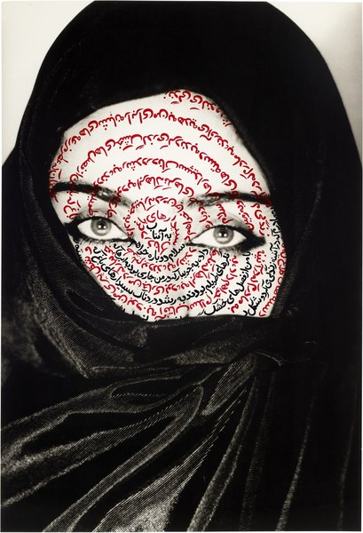
CRVI002007Shirin Neshat - Unveiling

CRVI000412Heavy D & The Boyz - Peaceful Journey
Designer unknown · Uptown · 1991
Designer unknown · Uptown · 1991

CRVI001602Albert Dubois-Pillet - Portrait of Monsieur Pool
1887
1887

CRVI001813Richard Hamilton - Swingeing London 67 (f)
1969
1969
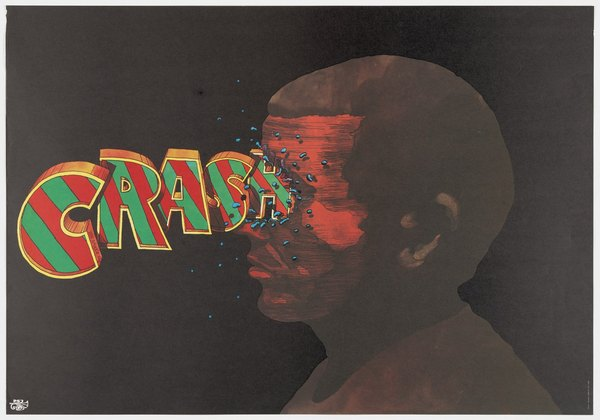
CRVI002372Jan Sawka - Crash
1977
1977

CRVI001588Richard Estes - Downtown Reflections
2001
2001

CRVI000760Witold Dybowski - Powrót Jedi
Return of the Jedi · Polish release poster · 1984
Return of the Jedi · Polish release poster · 1984

CRVI001567Max Beckmann - Perseus's Last Duty
1949
1949

CRVI001370Frank Wess - Yo Ho! / Poor You, Little Me
Designer unrecorded · Prestige 7266 · 1963
Designer unrecorded · Prestige 7266 · 1963

CRVI000223The Five Corners Quintet - Hot Corner
Designer unknown · Ricky-Tick · 2008
Designer unknown · Ricky-Tick · 2008

CRVI001337Hawkwind - X In Search Of Space
Maker unidentified · United Artists · 1971
Maker unidentified · United Artists · 1971

CRVI000584Irving Spellings - …one-third of a nation…
A Living Newspaper about housing · Adelphi Theatre, New York · between 1936 and 1939
A Living Newspaper about housing · Adelphi Theatre, New York · between 1936 and 1939

CRVI001254unattributed - Thelonious Monk at the piano
Photographer unidentified
Photographer unidentified

CRVI001375Thelonious Monk - Thelonious Himself
Designed by Paul Bacon, photograph by Paul Weller · Riverside 12-235 · 1957
Designed by Paul Bacon, photograph by Paul Weller · Riverside 12-235 · 1957

CRVI001061Ingo Swann - Cosmic painting

CRVI001169Oscar Peterson, Milt Jackson, Ray Brown, Louis Hayes - Reunion Blues
Designed by Wolfgang Baumann · MPS Records · 1971
Designed by Wolfgang Baumann · MPS Records · 1971

CRVI000159Kazumasa Nagai - JIDA 30th Anniversary Program
Designed by Kazumasa Nagai · 1982
Designed by Kazumasa Nagai · 1982

CRVI000475Justin Metz - The Atlantic, October 2024
The Atlantic October · 2024
The Atlantic October · 2024

CRVI000219Yayoi Kusama - Longing for Eternity
Photograph by Vincent Tullo · shown in 'Festival of Life', David Zwirner Gallery · 2017
Photograph by Vincent Tullo · shown in 'Festival of Life', David Zwirner Gallery · 2017

CRVI000263Roman Cieślewicz - Polish Fashion
Advertising Poster · 1972 · 1972
Advertising Poster · 1972 · 1972

CRVI001273Thelonious Monk - Genius Of Modern Music, Volume 1
Designed by Paul Bacon, photograph by Francis Wolff · Blue Note 5002 · 1951
Designed by Paul Bacon, photograph by Francis Wolff · Blue Note 5002 · 1951

CRVI000333100 Proof (Aged In Soul) - 100 Proof Aged In Soul
Designer unknown · Hot Wax · 1972
Designer unknown · Hot Wax · 1972

CRVI001217Mati Klarwein - Untitled
Painting · plate P11-vol2-68 on the artist's own site
Painting · plate P11-vol2-68 on the artist's own site

CRVI000001Paul Jebanasam - Rites
Designed by Alex Digard · 2013
Designed by Alex Digard · 2013